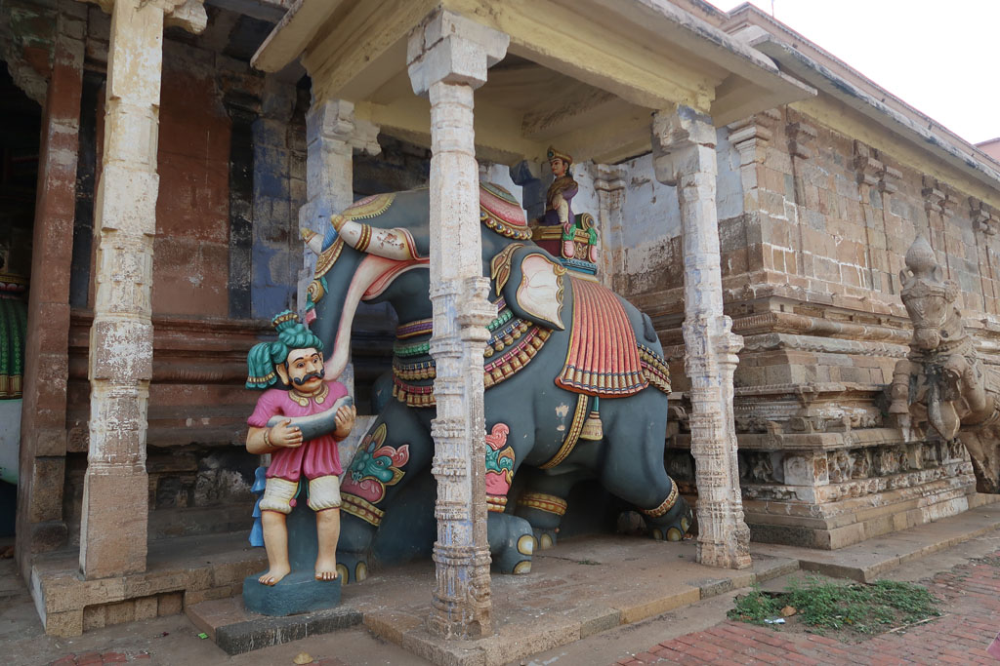
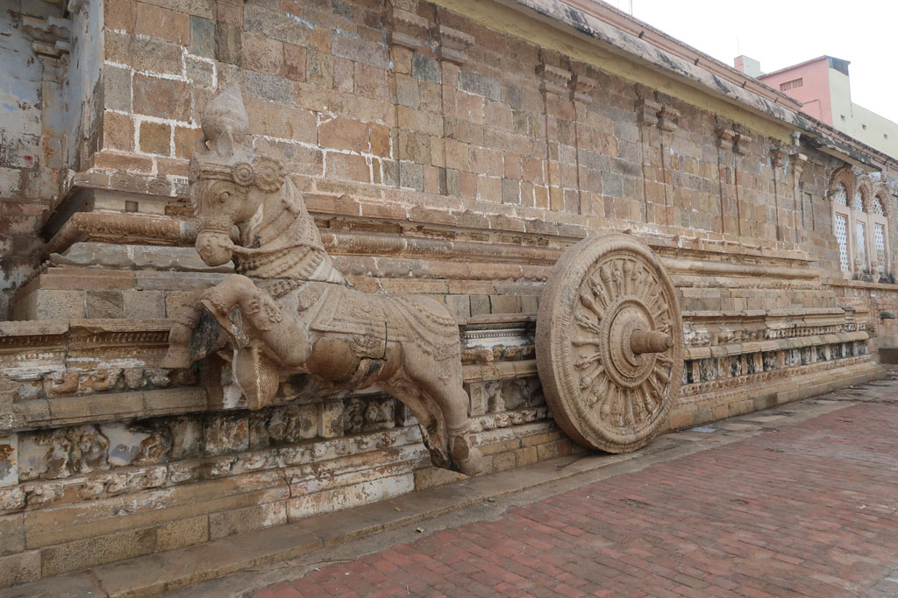
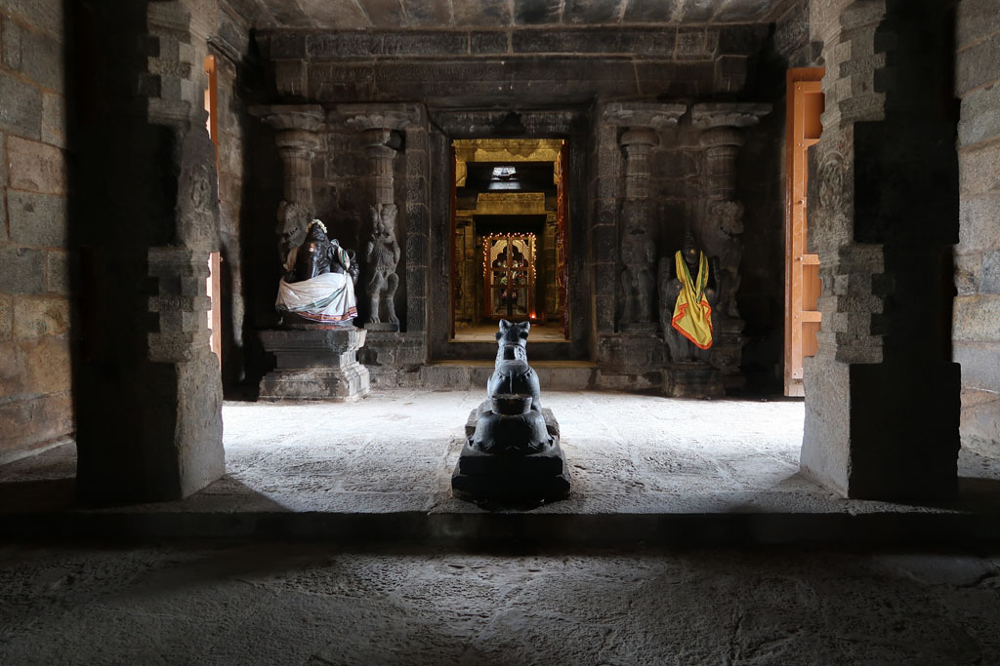
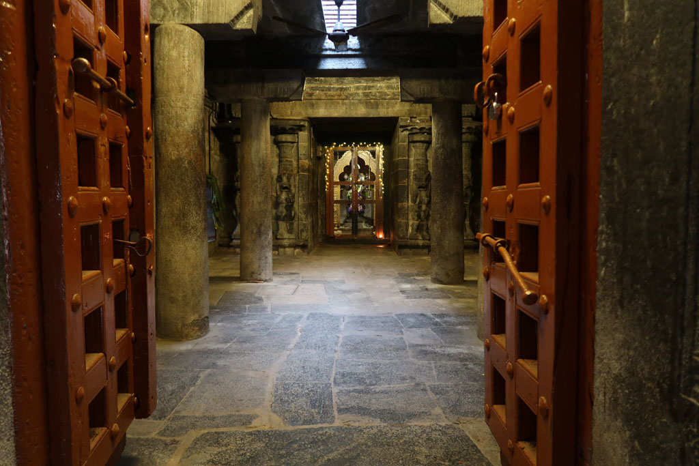

Tamil Nadu / Kumbakonam
7h00 Je descends à la lessive et je pars me promener autour du temple proche.
7h30 réveil du reste de la troupe.
8h00 direction la cantine du coin pour un petit déjeuner à l’indienne. Puri masala x2, café x4 200R
Après un passage par la chambre d’hôtel on négocie un tuk tuk pour aller voir un temple à l’extérieur de la ville 300R, superbe et vide.




10h30 On part en balade dans les rues de la ville. Petits achats. IL commence à faire trop chaud pour se promener. Nous rentrons donc à notre chambre en passant par un vendeur de jus de fruits. Lemon juice, orange juice x2, grenade shake, de l’eau en bouteille. 200R
12h00 Retour à la chambre.
15h15 Partons en balade dans les rues de la ville, de ruelle en temple, en bazars, jus de fruits
18h30 Retour hôtel. Je pars à la recherche d’un ATM qui fonctionne pendant 1h00.
19h30 retour de lessive.
19h45, départ pour le restaurant, nous revenons à l’Anapurna. Mushroom dosa, fried rice, puri x2, onion chapati, lemon juice x2 420R
21h00 bouclage des sacs